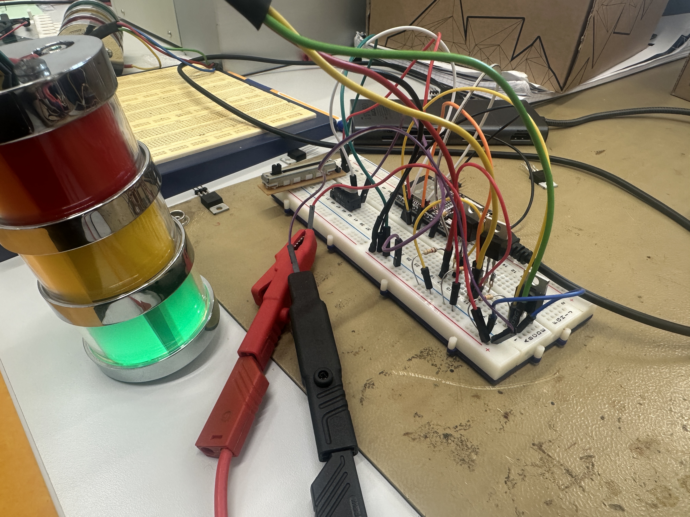
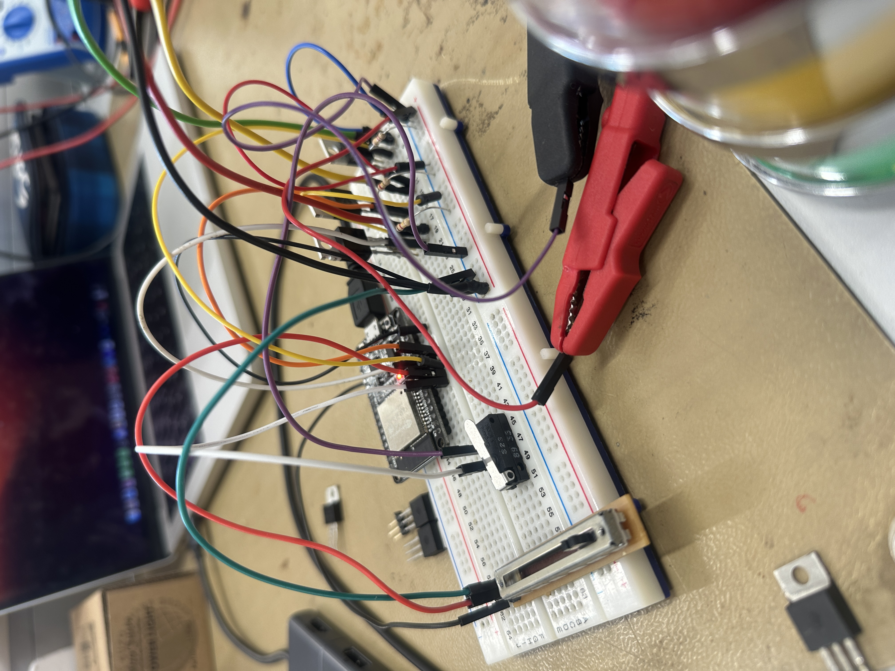

Werkstättenprotokoll 06.11
| Titel | Daten |
|---|---|
| Einheit | 06.11 |
| Inhaltsübersicht | Ampellicht nach öster. Ampelsteuerung schalten |
| Stunden (Einheiten) | 7 |
| Fachlehrer | Martin GIMPL |
| Werkstätte | EMC |
Inhalt
- Ampelschaltung
- Ziel: Eine funktionierende Ampelschaltung nach österreichischen Anforderungen
- Umsetzung
- Schaltplan erstellen mit easyEDA (Protokoll 23.10 siehe hier)
- Schaltung berechnen
- Prototypen mit der Hilfe des Steckbretts schaltplan getreu aufbauen
- Mikrocontroller (ESP32) programmieren
- Code Architektur
Protokoll
Ampelschaltung
Ziel der Ampelschaltung war es, eine Ampelschaltung umzusetzen, welche nach den österreichischen Anforderungen schaltet.
Schaltplan
Dies ist bereits im Protokoll vom 23.10 zufinden. Es kann hier geöffnet werden.
Berechnung
Da die Lampe bereits einen Innenwiderstand verbaut hat, ist dieser Punkt überfällig.
Aufbau
Der Aufbau kann den folgenden zwei Bildern angeschaut werden:
 
Programmierung
Wir nutzten wir switch case. Diese Funktion hat folgenden Syntax:
switch(expression) {
case x:
// code block
break;
case y:
// code block
break;
default:
// code block
}
Die expression ist mit enum (~ Enumeration) definiert:
enum Level {
LOW,
MEDIUM,
HIGH
};
Note
enum ~ Enumeration ist eine Gruppe von konstanten Variablen. Dabei steht wie im oben Beispiel beschrieben LOW für 0, MEDIUM für 1 und HIGH für 2.
Die Ampelschaltung wurde mit dem zuvor besprochen Wissen umgesetzt:
enum Trafficlights
{
RedPhase,
RedOrangePhase,
GreenPhase,
GreenBlinkPhase,
OrgangeAfterGreenPhase,
UndefinedState,
pedestrianGreen,
pedestrianRed,
pedestrianStart
};
uint8_t Trafficlights = RedPhase; // Die Variable Trafficlights mit der Enumeration RedPhase deklarieren
void loop()
{
switch (Trafficlights)
{
case RedPhase:
digitalWrite(RED_BULB, HIGH);
digitalWrite(GREEN_BULB, LOW);
digitalWrite(YELLOW_BULB, LOW);
delay(FIXED_STATE_TIME);
Trafficlights = RedOrangePhase;
break;
case RedOrangePhase:
digitalWrite(RED_BULB, HIGH);
digitalWrite(YELLOW_BULB, HIGH);
digitalWrite(GREEN_BULB, LOW);
delay(SWITCH_STATE_TIME);
Trafficlights = GreenPhase;
break;
case GreenPhase:
digitalWrite(RED_BULB, LOW);
digitalWrite(YELLOW_BULB, LOW);
digitalWrite(GREEN_BULB, HIGH);
delay(FIXED_STATE_TIME);
Trafficlights = GreenBlinkPhase;
break;
case GreenBlinkPhase:
digitalWrite(RED_BULB, LOW);
digitalWrite(YELLOW_BULB, LOW);
for (int i = 0; i < 4; i++)
{
digitalWrite(GREEN_BULB, LOW);
delay(BLINK_TIME);
digitalWrite(GREEN_BULB, HIGH);
delay(BLINK_TIME);
}
Trafficlights = OrgangeAfterGreenPhase;
break;
case OrgangeAfterGreenPhase:
digitalWrite(RED_BULB, LOW);
digitalWrite(GREEN_BULB, LOW);
digitalWrite(YELLOW_BULB, HIGH);
delay(SWITCH_STATE_TIME);
digitalWrite(YELLOW_BULB, LOW);
Trafficlights = RedPhase;
break;
case UndefinedState:
while (true)
{
digitalWrite(YELLOW_BULB, LOW);
delay(BLINK_TIME);
digitalWrite(YELLOW_BULB, HIGH);
delay(BLINK_TIME);
}
}
}
Note
uint8_t ist ein unsigned Int (eine Integer-Variable mit 32-Bit Speicher Verbrauch → kann von 0 bis 2^32 also 4294967295 speichern) welche auf 8-Bit Speicher Verbrauch beschränkt ist. Daher kann sie
Code Architektur
Der Code kann über folgenden Flowchart dargestellt werden:
Code
Der gesamte Code befindet sich auf Github und kann unter diesem Link geöffnet werden.
Die Repository für alle Einheiten kann unter diesem Link geöffnet werden.